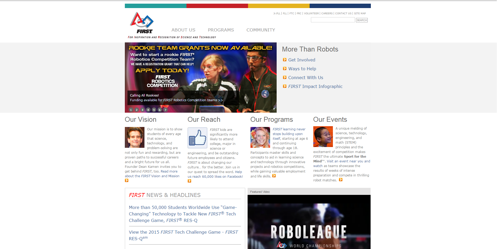

About Me!
I am currently a Drupal Developer for FIRST. In my spare time I also am a volunteer for FIRST in Illinois. I also run a high-school FIRST program FIRST 5125, Hawks On The Horizon (We Tweet!).
Cooking is also a ton of fun, I wish I was much better at it, but I certainly have my moments. My best dish is probably my Nachos, followed by my generic Chicken w/ Vegetables.
A list of my favorite TV shows/movies:
- The Fresh Prince of Bel-Air
- Game of Thrones
- The Jungle Book
- Rush Hour (and 2 and 3)
To learn more about some of my work click on the examples below!
FIRST

At FIRST, I am responsible for all of FIRST's Drupal websites, which currently includes 7 different sites. My main responsibility is the default site which is featured below. This site is currently being re-built to feature a better UI and responsiveness to different devices.
Technologies Used:
- Drupal
- Bootstrap
- Underscore
- HTML5 - Video
- Modernizr

One North

At One North, I assisted clients with supporting existing web solutions and also played a role in creating new web applications. I played a major role in building two websites, BakerBotts and BassBerry, which are featured below.
Technologies Used:
- Sitecore
- FoundationJS
- Lucene

Illini Robotics

Illini Robotics is a non-profit in the Urbana-Champaign area that I am a part of. I created the initial website which included a custom blogging implementation written in PHP
Technologies Used: